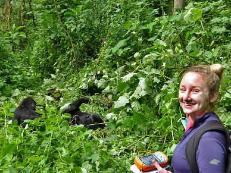
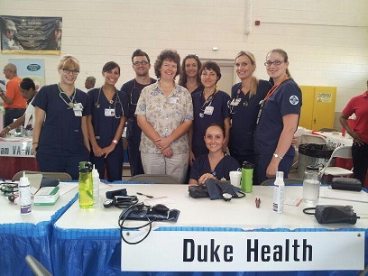

 Leigh Riley working for the Max Planck Institute for Evolutionary Anthropology's Bwindi Mountain Gorilla Research Project
 Sydney White, anthropologist and Public Health RN
A degree in anthropology provides a unique perspective and opens the door for many job opportunities. Anthropologists are employed in academic, medical, corporate, government, and non-profit careers doing a variety of work. Check out the links below to learn more about career opportunities with a degree in anthropology:
To complement UVM’s Career Center’s services, the Anthropology Department faculty provide students with individual advising. We also offer ANTH 205 Senior Proseminar in Anthropopgy, which is designed to be taken in conjunction with any 200-level class. This capstone pro-seminar in Anthropology provide a forum for majors to build and package anthropological skill sets and to identify, explore, and plan for future educational and career opportunities.
For a sample of our UVM Anthropology alumni activities see our UVM Anthropology Alumni Facebook page.